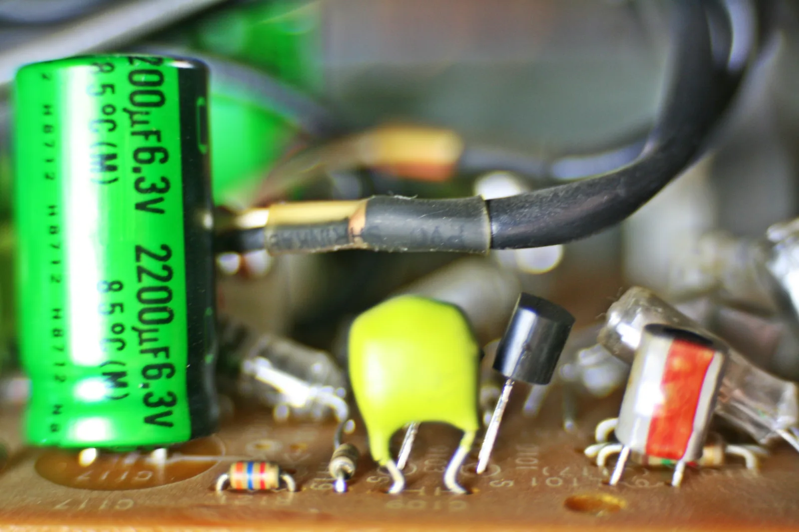

Virtapiiri, sähkövirta ja jännite
Miksi taskulampun lamppu syttyy samalla hetkellä, kun painat katkaisijaa, vaikka johdon elektronit etenevät hitaammin kuin etana?
Pohjatiedot
- Energia ei häviä eikä synny tyhjästä, vaan se muuttuu muodosta toiseenluku Energialajit ja energian säilyminen
Ydinpolku: etene vaiheiden mukaan. Valinnainen-merkityt tehtävät tarjoavat lisäharjoittelua. Valinnaisia tehtäviä 2.
Pohdinta
Painat taskulampun katkaisijaa, ja lamppu syttyy samalla hetkellä. Taskulampun sisällä paristot, katkaisija ja lamppu on yhdistetty metalliliuskoilla. Lamppu on palanut monta iltaa, ja paristot ovat vähitellen tyhjentyneet.
Mitä taskulampun johtimissa oikeastaan liikkuu, ja mitä paristosta kuluu, kun lamppu palaa?
Valinnainen Kertaa: energian säilyminen
Ennusta
Tee ennusteet ennen tutkimista 2 kysymystä
Ennuste 1: ennen ja jälkeen lampun
Ennuste 2: toinen lamppu samaan silmukkaan
Tutki
Simulaation johto on täynnä vapaita elektroneja. Sulje ja avaa kytkin, vaihda paristojen ja lamppujen määrää ja mittaa, kuinka paljon varausta kulkee kohtien $A$ ja $B$ läpi.
Simulaatio
Käyttöohje
Valitse paristojen määrä (jokainen $1{,}5\,\text{V}$), lamppujen määrä ja onko kytkin suljettu vai auki. Paina Mittaa: simulaatio laskee $10{,}0\,\text{s}$:n ajan ne siniset pisteet, jotka kulkevat poikkileikkausten $A$ ja $B$ läpi, ja näyttää varaukset $Q_A$ ja $Q_B$ kuvan alla. Poikkileikkaus $A$ on yläjohdossa ennen lamppuja ja $B$ oikean reunan paluujohdossa lamppujen jälkeen. Asetuksen muuttaminen ja Nollaa tyhjentävät mittauksen. Nopeus muuttaa vain kuvan tahtia; mittaus kestää aina $10{,}0\,\text{s}$ simulaation aikaa.
Mallin oletukset
Arvot ovat simulaation laskemia mallin arvoja. Yksi sininen piste esittää elektronijoukkoa, jonka varaus on yhteensä $0{,}05\,\text{C}$, eli noin $3 \cdot 10^{17}$ elektronia. Elektronien liike on kuvassa hyvin paljon suurennettu: todellisuudessa ne etenevät johdossa alle millimetrin sekunnissa. Mallissa jokainen lamppu vastustaa virtaa samalla tavalla jännitteestä riippumatta; todellisen hehkulampun virta kasvaa jännitteen mukana selvästi hitaammin. Johtojen ja paristojen oma vastus jätetään huomiotta. Mallissa varaus ei synny eikä katoa missään piirin kohdassa, joten $Q_A = Q_B$ on mallin ominaisuus eikä erillinen mittaus; todellisilla virtamittareilla mitattuna tulos on sama.
Laskennan selitys
Mittari laskee pisteet, jotka kulkevat poikkileikkauksen läpi, ja kertoo niiden lukumäärän pisteen varauksella $0{,}05\,\text{C}$. Virran saa itse laskemalla $I = Q/t$, kun $t = 10{,}0\,\text{s}$. Lampun kirkkaus kasvaa lampun tehon mukana.
Koe 1: varaus ennen ja jälkeen lampun
Alkutila valitsee yhden lampun ja suljetun kytkimen. Valitse paristojen määrä, paina Mittaa ja odota, kunnes mittaus on valmis. Kirjaa mittaus vasta silloin. Toista yhdellä, kahdella ja kolmella paristolla.
Alkutila: paristoja = $1$, lamppuja = $1$, kytkin: suljettu. Vakiona: lamppuja, kytkin. Muutetaan: paristoja.
| paristoja | $Q_\text{A}$ $(\text{C})$ | $Q_\text{B}$ $(\text{C})$ |
|---|
Laske taulukon rivin, jossa paristoja on kaksi, varauksesta $Q_A$ lampun läpi kulkeva sähkövirta. Mittaus kesti $10{,}0\,\text{s}$. Vastaa ampeereina.
Vihje 1: ohjaava kysymys
Virta kertoo, kuinka suuri varaus kulkee poikkileikkauksen läpi sekunnissa.
Vihje 2: mikä yhteys
Käytä kaavaa $I = \tfrac{Q}{t}$, missä $Q$ on taulukon varaus ja $t = 10{,}0\,\text{s}$.
Vihje 3: välivaihe
$I = \tfrac{Q_A}{10{,}0\,\text{s}}$, missä $Q_A$ on kahden pariston rivin varaus coulombeina.
Näytä ratkaisu
Annettu
taulukosta kahden pariston rivin varaus $Q_A = 2{,}00\,\text{C}$ (mallin arvo) ja mittausaika $t = 10{,}0\,\text{s}$
Kysytty
lampun läpi kulkeva sähkövirta $I$ yksikössä $\text{A}$
Periaate
Sähkövirta on poikkileikkauksen läpi kulkeva varaus aikayksikössä. Poikkileikkaus $A$ on samassa silmukassa kuin lamppu, ja varausta ei kulu, joten sen läpi kulkeva virta on sama kuin lampun läpi kulkeva virta.
Kaava
$I = \dfrac{Q_A}{t}$
Muunnokset
Varaus on coulombeina ja aika sekunteina, joten virta saadaan suoraan ampeereina.
Sijoitus
Vastaus
$0{,}200\,\text{A}$
Kolme merkitsevää numeroa kuten varauksessa $2{,}00\,\text{C}$ ja ajassa $10{,}0\,\text{s}$.
Järkevyys
Kohdan $B$ varaus $Q_B = 2{,}00\,\text{C}$ antaa saman virran, joten lamppu ei kuluta varausta. Yhdellä paristolla virta oli $0{,}100\,\text{A}$ ja kolmella $0{,}300\,\text{A}$, joten kaksinkertainen jännite antoi tässä mallissa kaksinkertaisen virran. Taskulampun lampun virta on tavallisesti juuri muutamia ampeerin kymmenesosia.
Koe 2: toinen lamppu
Alkutila valitsee kaksi paristoa ja suljetun kytkimen. Mittaa ensin yhdellä lampulla ja sitten kahdella lampulla: paina joka kerta Mittaa, odota, että mittaus on valmis, ja kirjaa mittaus. Katso myös, kuinka kirkkaasti lamput palavat.
Alkutila: paristoja = $2$, lamppuja = $1$, kytkin: suljettu. Vakiona: paristoja, kytkin. Muutetaan: lamppuja.
| lamppuja | $Q_\text{A}$ $(\text{C})$ | $Q_\text{B}$ $(\text{C})$ |
|---|
Johtopäätös
Selitä mittaustesi avulla, kuluuko sähkövirta lampussa. Käytä sanoja varaus, sähkövirta ja energia, ja kerro, mikä virran suuruuteen vaikutti.
Mallivastaus
Kokeessa 1 kohtien $A$ ja $B$ läpi kulki mallin arvoissa joka rivillä sama varaus: yhdellä paristolla $1{,}00\,\text{C}$, kahdella $2{,}00\,\text{C}$ ja kolmella $3{,}00\,\text{C}$ ajassa $10{,}0\,\text{s}$. Virta $I = \tfrac{Q}{t}$ oli siis esimerkiksi kahdella paristolla $0{,}200\,\text{A}$ lampun molemmin puolin. Sähkövirta ei kulu lampussa: jokainen lamppuun tuleva elektroni lähtee siitä ja palaa paristoon. Lampussa muuttuu energian muoto, kun varauksen tuoma sähköinen energia muuttuu valoksi ja hehkulangan sisäenergiaksi, joka siirtyy lämpönä ympäristöön. Suurempi jännite antoi suuremman virran. Kokeessa 2 toinen lamppu samassa silmukassa pienensi varauksen $1{,}00\,\text{C}$:iin sekä kohdassa $A$ että kohdassa $B$, joten virta pieneni koko silmukassa yhtä paljon.
Arvioi oma vastauksesi
Rastita kohdat, jotka omassa vastauksessasi jo on.
Kertaa asia teoriatiivistelmästä ja harjoittele tehtävillä.
Teoriatiivistelmä
Ydinajatus
Kaikki aine koostuu atomeista, joissa on positiivisesti varattuja protoneja ja negatiivisesti varattuja elektroneja. Varaukset vaikuttavat toisiinsa sähköisellä vuorovaikutuksella: samanmerkkiset varaukset hylkivät toisiaan ja erimerkkiset vetävät toisiaan puoleensa. Tavallisessa kappaleessa protoneja ja elektroneja on yhtä paljon, joten kappale on sähköisesti neutraali. Kun varauksia saadaan liikkumaan samaan suuntaan, syntyy sähkövirta. Sähkövirta on siis varauksen liikettä, ja sen avulla sähköinen vuorovaikutus siirtää energiaa paristosta lamppuun.
Johteet ja eristeet
Aine, jossa varaukset pääsevät liikkumaan, on johde. Metalleissa osa elektroneista ei ole sidottu yksittäiseen atomiin, vaan ne liikkuvat vapaasti metalli-ionien välissä. Näitä kutsutaan vapaiksi elektroneiksi. Siksi kupari, alumiini ja muut metallit johtavat hyvin sähköä. Aine, jossa varaukset eivät pääse liikkumaan, on eriste: muovi, kumi, lasi ja kuiva puu. Sähköjohdossa on kuparinen johdin, jonka ympärillä on muovinen eristekuori. Eriste estää virtaa kulkemasta sinne, minne sen ei kuulu kulkea.
Virtapiiri
Lamppu palaa vain, kun se on osa suljettua virtapiiriä: jännitelähteestä, kuten paristosta, lähtee johdin lamppuun ja lampusta johdin takaisin jännitelähteen toiseen napaan. Kytkin avaa ja sulkee piirin. Kun kytkin avataan, piiriin tulee katko, ja virta lakkaa kulkemasta koko piirissä samalla hetkellä. Virtaa ei synny paristossa eikä se kulu lampussa. Lampun läpi kulkee yhtä suuri virta kuin piirin muissakin kohdissa, ja sama varaus palaa paristoon. Lamppu ei kuluta varausta vaan muuttaa sähköistä energiaa valoksi ja hehkulangan sisäenergiaksi, joka siirtyy lämpönä ympäristöön.
Virran suunta ja elektronien liike
Virran suunnaksi on sovittu suunta, johon positiivinen varaus liikkuisi: ulkoisessa piirissä jännitelähteen plusnavasta miinusnapaan. Metallijohtimessa liikkuvat kuitenkin negatiiviset elektronit, ja ne kulkevat päinvastaiseen suuntaan, miinusnavasta plusnapaan. Sovittu suunta on peräisin ajalta ennen elektronin löytämistä, ja sitä käytetään edelleen kaikissa kytkentäkaavioissa. Elektronit etenevät johdossa hitaasti, tyypillisesti alle millimetrin sekunnissa. Lamppu syttyy silti heti, koska johto on alusta asti täynnä vapaita elektroneja. Kun piiri suljetaan, sähkökenttä syntyy koko johtoon lähes valon nopeudella, ja kaikki vapaat elektronit alkavat liikkua yhtä aikaa myös lampun hehkulangassa.
Kytkentäkaavio
Virtapiiri piirretään kytkentäkaaviona, jossa jokaisella komponentilla on oma piirrosmerkkinsä. Paristossa pitkä ohut viiva on plusnapa ja lyhyt paksu viiva miinusnapa. Lamppu on ympyrä, jonka sisällä on risti, ja vastus on suorakulmio. Mittarit piirretään ympyröinä, joiden sisällä on mittarin kirjain: ampeerimittari $\text{A}$ ja volttimittari $\text{V}$. Johtimet piirretään suorina vaakasuorina ja pystysuorina viivoina. Kahden johtimen liitoskohta merkitään pisteellä.
Kaavio näyttää, mitkä komponentit on kytketty toisiinsa, ei sitä, miltä laitteet näyttävät tai kuinka pitkiä johdot ovat. Samasta virtapiiristä voi siksi piirtää monta oikean näköistä kaaviota. Tärkeää on, että virta kulkee kaaviossa samojen komponenttien kautta samassa järjestyksessä kuin todellisessa piirissä. Virran suunta merkitään johtimen viereen nuolella plusnavasta miinusnapaan.
Sähkövirta
Sähkövirta kertoo, kuinka suuri varaus kulkee johtimen poikkileikkauksen läpi aikayksikössä:
$$I = \frac{Q}{t}$$
missä $I$ on sähkövirta ($\text{A}$), $Q$ poikkileikkauksen läpi kulkenut varaus ($\text{C}$) ja $t$ aika ($\text{s}$). Varauksen yksikkö on coulombi $\text{C}$ ja virran yksikkö ampeeri $\text{A}$. Virta on $1\,\text{A}$, kun poikkileikkauksen läpi kulkee joka sekunti varaus $1\,\text{C}$, eli $1\,\text{A} = 1\,\text{C/s}$. Kun virta tunnetaan, kulkenut varaus saadaan tulona $Q = It$.
Varaus ja elektronien määrä
Elektronin varaus on $-e$, missä $e$ on alkeisvaraus, pienin vapaana esiintyvä varaus. Kun $N$ elektronia kulkee poikkileikkauksen läpi, kulkenut varaus on niiden varausten summa:
$$Q = N e$$
missä $Q$ on varauksen suuruus ($\text{C}$), $N$ elektronien lukumäärä ja $e = 1{,}602 \cdot 10^{-19}\,\text{C}$ alkeisvaraus. Yhden coulombin varaukseen tarvitaan siis noin $6{,}24 \cdot 10^{18}$ elektronia. Siksi elektroneja ei lasketa yksitellen, vaan virtaa mitataan ampeereina.
Jännite
Paristo ei anna piiriin varausta, sillä varaus kiertää piirissä ja palaa paristoon. Paristo antaa varaukselle energiaa, ja lamppu muuttaa sen energian valoksi ja hehkulangan sisäenergiaksi, joka siirtyy lämpönä ympäristöön. Jännite kertoo, kuinka paljon energiaa siirtyy jokaista varausyksikköä kohti, kun varaus kulkee kahden kohdan välillä:
$$U = \frac{E}{Q}$$
missä $U$ on jännite ($\text{V}$), $E$ siirtynyt energia ($\text{J}$) ja $Q$ varaus ($\text{C}$). Jännitteen yksikkö on voltti $\text{V}$, ja $1\,\text{V} = 1\,\text{J/C}$. AA-pariston jännite $1{,}5\,\text{V}$ tarkoittaa, että jokainen paristosta lamppuun kulkeva coulombi tuo lamppuun $1{,}5\,\text{J}$ energiaa, kun johtojen ja pariston oma vastus jätetään huomiotta. Mitä suurempi jännite, sitä enemmän energiaa sama varaus siirtää.
Tyypillisiä arvoja
Jännitteet ja virrat vaihtelevat arkisissa laitteissa paljon. Taulukon arvot ovat suuruusluokkia.

| Jännitelähde | Jännite |
|---|---|
| AA-paristo | $1{,}5\,\text{V}$ |
| puhelimen akku | $3{,}7\,\text{V}$ |
| auton akku | $12\,\text{V}$ |
| Laite | Virta |
|---|---|
| merkkivalon LED | $0{,}02\,\text{A}$ |
| taskulampun lamppu | $0{,}3\,\text{A}$ |
| puhelimen laturi | $2\,\text{A}$ |
Yleinen virhekäsitys
Moni ajattelee, että lamppu kuluttaa sähkövirtaa, joten lampun jälkeen johdossa kulkisi vähemmän virtaa kuin ennen lamppua. Näin ei ole: sama varaus, joka tulee lamppuun, lähtee siitä ja palaa paristoon, joten virta on yhtä suuri lampun molemmin puolin. Lamppu muuttaa varauksen kuljettamaa sähköistä energiaa valoksi ja hehkulangan sisäenergiaksi. Toinen virhekäsitys on, että elektronit lähtevät paristosta ja kulkevat lamppuun asti ennen kuin lamppu syttyy. Johto on kuitenkin valmiiksi täynnä vapaita elektroneja, ja ne alkavat liikkua kaikkialla piirissä yhtä aikaa.
Tiivistelmä
- Sähkövirta on varauksen liikettä. Metallijohtimessa liikkuvat vapaat elektronit; eristeessä varaukset eivät pääse liikkumaan.
- Virta kulkee vain suljetussa virtapiirissä. Sama virta kulkee lampun läpi ja palaa paristoon: virta ei kulu. Paristosta kuluu energiaa, ei varausta.
- Sähkövirta on $I = \tfrac{Q}{t}$, yksikkö ampeeri, $1\,\text{A} = 1\,\text{C/s}$. Varaus on $Q = Ne$, missä $e = 1{,}602 \cdot 10^{-19}\,\text{C}$.
- Jännite on siirtynyt energia varausyksikköä kohti, $U = \tfrac{E}{Q}$, yksikkö voltti, $1\,\text{V} = 1\,\text{J/C}$.
- Sovittu virran suunta on ulkoisessa piirissä plusnavasta miinusnapaan; elektronit liikkuvat vastakkaiseen suuntaan.
- Kytkentäkaaviossa komponentit piirretään piirrosmerkeillä ja johtimet suorina viivoina. Kytkin piirretään avoimena (vipu irti) tai suljettuna (vipu kosketuksissa).
Valinnainen Palaa ennusteisiisi
Vertaa ennusteitasi mittauksiin. Muuttuiko käsityksesi siitä, mitä lampussa kuluu? Palaa myös alun taskulamppuun: mikä paristosta kuluu, kun lamppu palaa monta iltaa?
Muuttaisitko ennustettasi?
Sovella
Esimerkki
Tehtävä
Taskulampun lampun läpi kulkee $0{,}25\,\text{A}$:n virta, ja lamppu palaa $12\,\text{min}$. Kuinka suuri varaus kulkee tänä aikana lampun läpi?
Vaihe 1/7
Tunnetut ja kysytty. Virta $I = 0{,}25\,\text{A}$ ja aika $t = 12\,\text{min}$. Kysytään lampun läpi kulkenutta varausta $Q$.
Vaihe 2/7
Periaate. Virta kertoo, kuinka suuri varaus kulkee lampun läpi sekunnissa. Virta pysyy samana koko ajan, joten varaus saadaan virran määritelmästä $I = \tfrac{Q}{t}$.
Vaihe 3/7
Kaava ratkaistuna. Ratkaistaan varaus kertomalla yhtälön molemmat puolet ajalla:
$$\begin{aligned} I &= \frac{Q}{t} \\ Q &= I t \end{aligned}$$
Vaihe 4/7
Yksikkömuunnokset. Ampeeri on coulombi sekunnissa, joten aika muutetaan sekunneiksi:
Vaihe 5/7
Sijoitus. Sijoitetaan lukuarvot yksiköineen, ja $1\,\text{A}\cdot\text{s} = 1\,\text{C}$:
$$\begin{aligned} Q &= I t \\ &= 0{,}25\,\text{A}\cdot 720\,\text{s} \\ &= 180\,\text{C} \end{aligned}$$
Vaihe 6/7
Tulos. Lampun läpi kulkee varaus $Q = 180\,\text{C}$, kahden merkitsevän numeron tarkkuudella $1{,}8 \cdot 10^{2}\,\text{C}$ kuten lähtötiedoissa $0{,}25\,\text{A}$ ja $12\,\text{min}$.
Vaihe 7/7
Järkevyys. Joka sekunti lampun läpi kulkee neljäsosa coulombia, ja $720\,\text{s}$:ssa neljäsosa luvusta $720$ on $180$. Elektroneina varaus on
elektronia, valtava määrä, mutta johdossa niitä on vielä paljon enemmän.
Etsi virhe
Sovella uuteen tilanteeseen
Sähköpotkulaudan akun jännite on $36\,\text{V}$. Ajon aikana moottorin läpi kulkee keskimäärin $8{,}0\,\text{A}$:n virta, ja ajomatka kestää $25\,\text{min}$. Kuinka paljon energiaa akku siirtää moottorille ajon aikana? Vastaa kilojouleina.
Vihje 1: ohjaava kysymys
Selvitä ensin, kuinka suuri varaus kulkee moottorin läpi ajon aikana. Virta on coulombeja sekunnissa.
Vihje 2: mikä yhteys
Varaus on $Q = It$, kun aika on sekunteina: $25\,\text{min} = 25 \cdot 60\,\text{s}$. Jännite kertoo energian jokaista coulombia kohti.
Vihje 3: välivaihe
muuta lopuksi joulet kilojouleiksi.
Näytä ratkaisu
Annettu
akun jännite $U = 36\,\text{V}$, virta $I = 8{,}0\,\text{A}$, aika $t = 25\,\text{min}$
Kysytty
akusta moottorille siirtynyt energia $E$ kilojouleina
Periaate
Virta pysyy keskimäärin samana, joten moottorin läpi kulkenut varaus on $Q = It$. Jännite kertoo, kuinka paljon energiaa jokainen coulombi siirtää, joten energia on jännitteen ja varauksen tulo $E = UQ$.
Kaava
$Q = It$ ja $E = UQ$, joten $E = UIt$
Muunnokset
lopuksi $1\,\text{kJ} = 1000\,\text{J}$.
Sijoitus
Vastaus
$4{,}3 \cdot 10^{2}\,\text{kJ}$
Kaksi merkitsevää numeroa kuten virrassa $8{,}0\,\text{A}$, jännitteessä $36\,\text{V}$ ja ajassa $25\,\text{min}$.
Järkevyys
Arvio pyöreillä luvuilla: noin $300\,\text{J}$ sekunnissa ($36 \cdot 8 \approx 300$) ja noin $1500\,\text{s}$ antaa noin $450\,000\,\text{J}$. Tulos on samaa suuruusluokkaa. Se on noin $0{,}12\,\text{kWh}$, mikä sopii potkulaudan akulle, jonka energia on muutamia satoja wattitunteja.
Tarkista osaamisesi
1. Käsite
2. Laskeminen
Puhelimen laturi antaa puhelimelle $2{,}0\,\text{A}$:n virran $45\,\text{min}$ ajan. Kuinka suuri varaus kulkee latausjohdon läpi tänä aikana? Vastaa coulombeina.
Vihje 1: ohjaava kysymys
Virta kertoo, kuinka monta coulombia kulkee sekunnissa. Mikä on aika sekunteina?
Vihje 2: mikä yhteys
ja varaus on $Q = It$.
Vihje 3: välivaihe
$Q = 2{,}0\,\text{A}\cdot 2700\,\text{s}$.
Näytä ratkaisu
Annettu
virta $I = 2{,}0\,\text{A}$, aika $t = 45\,\text{min}$
Kysytty
latausjohdon läpi kulkenut varaus $Q$ yksikössä $\text{C}$
Periaate
Virta pysyy samana koko latauksen ajan, joten kulkenut varaus saadaan virran määritelmästä: virta on varaus aikayksikössä.
Kaava
$I = \dfrac{Q}{t}$, josta $Q = It$
Muunnokset
Sijoitus
Vastaus
$5{,}4 \cdot 10^{3}\,\text{C}$
Kaksi merkitsevää numeroa kuten virrassa $2{,}0\,\text{A}$ ja ajassa $45\,\text{min}$.
Järkevyys
Joka sekunti kulkee $2\,\text{C}$, ja $45$ minuutissa on $2700$ sekuntia, joten varaus on kaksinkertainen sekuntimäärä. Ampeeritunteina se on
noin kolmasosa tavallisen puhelimen akun varauksesta.
Harjoittele yksikkömuunnoksia tason 2 tehtävissä.
3. Kytkentäkaavio
Exit ticket
Lopuksi kolme nopeaa kysymystä. Vastaa ensin itse ja avaa vastaus vasta sitten.
- Mikä on johde ja mikä eriste? Anna kummastakin yksi esimerkki sähköjohdosta.
Vastaus
Johteessa varaukset pääsevät liikkumaan, esimerkiksi johdon kuparissa vapaat elektronit. Eristeessä varaukset eivät pääse liikkumaan; johdon muovikuori on eristettä.
- Mitä tarkoittaa, että pariston jännite on $1{,}5\,\text{V}$? Kuinka paljon energiaa paristo siirtää, kun sen läpi kulkee varaus $4{,}0\,\text{C}$?
Vastaus
Jokainen paristosta piiriin kulkeva coulombi saa $1{,}5\,\text{J}$ energiaa, koska $1\,\text{V} = 1\,\text{J/C}$. Varaukselle $4{,}0\,\text{C}$ energia on
$E$$= UQ$$= 1{,}5\,\text{V}\cdot 4{,}0\,\text{C}$$= 6{,}0\,\text{J}$ - Mihin suuntaan elektronit liikkuvat lampun ulkopuolisessa johdossa, ja mihin suuntaan sovittu virran suunta osoittaa?
Vastaus
Elektronit liikkuvat ulkoisessa piirissä pariston miinusnavasta plusnapaan. Sovittu virran suunta on päinvastainen, plusnavasta miinusnapaan.
Tehtävät
Taso 1 · perusharjoitus 5 tehtävää
Yksi kaava tai yksi päättelyaskel. Ydintehtävät ensin, loput lisäharjoitusta.
- Tehtävä 1-1Ydintehtävä
Lampun hehkulangan läpi kulkee $30\,\text{s}$:ssa varaus $45\,\text{C}$. Kuinka suuri sähkövirta lampun läpi kulkee?
Vastaus
$1{,}5\,\text{A}$
Näytä ratkaisu
Annettu
varaus $Q = 45\,\text{C}$, aika $t = 30\,\text{s}$
Kysytty
sähkövirta $I$ yksikössä $\text{A}$
Periaate
Sähkövirta kertoo, kuinka suuri varaus kulkee johtimen poikkileikkauksen läpi aikayksikössä. Tunnetaan sekä kulkenut varaus että aika, joten virta saadaan suoraan virran määritelmästä.
Kaava
$I = \dfrac{Q}{t}$
Muunnokset
Varaus on coulombeina ja aika sekunteina, joten virta saadaan suoraan ampeereina, koska $1\,\text{A} = 1\,\text{C/s}$.
Sijoitus
$I$$= \dfrac{45\,\text{C}}{30\,\text{s}}$$= 1{,}5\,\text{A}$Vastaus
$1{,}5\,\text{A}$
Kaksi merkitsevää numeroa kuten varauksessa $45\,\text{C}$ ja ajassa $30\,\text{s}$.
Järkevyys
Varaus on puolitoista kertaa sekuntien lukumäärä, joten joka sekunti kulkee $1{,}5\,\text{C}$. Tarkistus kertomalla: $1{,}5\,\text{A}\cdot 30\,\text{s} = 45\,\text{C}$. Virta on suurempi kuin taskulampun lampussa ($0{,}3\,\text{A}$) ja samaa luokkaa kuin auton jarruvalon lampussa, jossa $21\,\text{W} : 12\,\text{V} = 1{,}75\,\text{A}$.
- Tehtävä 1-2Ydintehtävä
Sähkömoottorin läpi kulkee $0{,}50\,\text{A}$:n virta $40\,\text{s}$:n ajan. Kuinka suuri varaus moottorin läpi kulkee tänä aikana?
Vastaus
$20\,\text{C}$
Näytä ratkaisu
Annettu
virta $I = 0{,}50\,\text{A}$, aika $t = 40\,\text{s}$
Kysytty
moottorin läpi kulkenut varaus $Q$ yksikössä $\text{C}$
Periaate
Virta kertoo, kuinka suuri varaus kulkee sekunnissa. Virta pysyy samana koko ajan, joten kulkenut varaus saadaan ratkaisemalla se virran määritelmästä.
Kaava
$I = \dfrac{Q}{t}$, josta $Q = It$
Muunnokset
Virta on ampeereina ja aika sekunteina, joten varaus saadaan coulombeina, koska $1\,\text{A}\cdot\text{s} = 1\,\text{C}$.
Sijoitus
$Q$$= 0{,}50\,\text{A}\cdot 40\,\text{s}$$= 20\,\text{C}$Vastaus
$20\,\text{C}$
Kaksi merkitsevää numeroa kuten virrassa $0{,}50\,\text{A}$ ja ajassa $40\,\text{s}$.
Järkevyys
Joka sekunti kulkee puoli coulombia, joten $40\,\text{s}$:ssa varausta kulkee puolet luvusta $40$ eli $20\,\text{C}$. Varaus vastaa noin $20 \cdot 6{,}2 \cdot 10^{18} \approx 1{,}2 \cdot 10^{20}$ elektronia. Vertailun vuoksi virta $0{,}50\,\text{A}$ on tavallinen pienen moottorin virta, ja se on suurempi kuin taskulampun lampun $0{,}3\,\text{A}$.
- Tehtävä 1-3
Paristo siirtää $54\,\text{J}$ energiaa varaukselle $6{,}0\,\text{C}$, joka kulkee sen läpi. Kuinka suuri on pariston jännite?
Vastaus
$9{,}0\,\text{V}$
Näytä ratkaisu
Annettu
siirtynyt energia $E = 54\,\text{J}$, varaus $Q = 6{,}0\,\text{C}$
Kysytty
pariston jännite $U$ yksikössä $\text{V}$
Periaate
Jännite kertoo, kuinka paljon energiaa siirtyy jokaista varausyksikköä kohti. Tunnetaan paristosta varaukselle siirtynyt energia ja varaus, joten jännite saadaan niiden osamääränä.
Kaava
$U = \dfrac{E}{Q}$
Muunnokset
Energia on jouleina ja varaus coulombeina, joten jännite saadaan voltteina, koska $1\,\text{V} = 1\,\text{J/C}$.
Sijoitus
$U$$= \dfrac{54\,\text{J}}{6{,}0\,\text{C}}$$= 9{,}0\,\text{V}$Vastaus
$9{,}0\,\text{V}$
Kaksi merkitsevää numeroa kuten varauksessa $6{,}0\,\text{C}$ ja energiassa $54\,\text{J}$.
Järkevyys
Jokainen coulombi saa paristolta $9\,\text{J}$, ja kuudelle coulombille se tekee $6 \cdot 9\,\text{J} = 54\,\text{J}$. Kaupoissa myydään juuri $9\,\text{V}$:n paristoja, joten tulos on uskottava.
- Tehtävä 1-4
Auton $12\,\text{V}$:n akusta kulkee käynnistysmoottorin läpi varaus $150\,\text{C}$. Kuinka paljon energiaa akku siirtää moottorille?
Vastaus
$1{,}8 \cdot 10^{3}\,\text{J}$
Näytä ratkaisu
Annettu
akun jännite $U = 12\,\text{V}$, akusta kulkeva varaus $Q = 150\,\text{C}$
Kysytty
akusta moottorille siirtynyt energia $E$ yksikössä $\text{J}$
Periaate
Jännite on siirtynyt energia varausyksikköä kohti. Kun tiedetään, kuinka monta joulea jokainen coulombi siirtää ja kuinka monta coulombia kulkee, energia saadaan ratkaisemalla jännitteen määritelmästä.
Kaava
$U = \dfrac{E}{Q}$, josta $E = UQ$
Muunnokset
Jännite on voltteina ja varaus coulombeina, joten energia saadaan jouleina, koska $1\,\text{V}\cdot\text{C} = 1\,\text{J}$.
Sijoitus
$E$$= 12\,\text{V}\cdot 150\,\text{C}$$= 1800\,\text{J}$Vastaus
$1{,}8 \cdot 10^{3}\,\text{J}$
Eli $1{,}8\,\text{kJ}$, kaksi merkitsevää numeroa kuten jännitteessä $12\,\text{V}$.
Järkevyys
Jokainen coulombi tuo moottorille $12\,\text{J}$. Sata coulombia toisi $1200\,\text{J}$ ja puolitoistakertainen varaus $1800\,\text{J}$. Käynnistys kestää vain hetken, joten muutaman kilojoulen energia on järkevä suuruusluokka.
- Tehtävä 1-5
Merkkivalon läpi kulkee $0{,}080\,\text{A}$:n virta. Kuinka kauan kestää, että merkkivalon läpi on kulkenut varaus $2{,}4\,\text{C}$?
Vastaus
$30\,\text{s}$
Näytä ratkaisu
Annettu
virta $I = 0{,}080\,\text{A}$, kulkeva varaus $Q = 2{,}4\,\text{C}$
Kysytty
aika $t$ yksikössä $\text{s}$
Periaate
Virta kertoo, kuinka suuri varaus kulkee sekunnissa. Kun virta pysyy samana, tarvittava aika saadaan ratkaisemalla se virran määritelmästä.
Kaava
$I = \dfrac{Q}{t}$, josta $t = \dfrac{Q}{I}$
Muunnokset
Varaus on coulombeina ja virta ampeereina, joten aika saadaan sekunteina, koska $1\,\text{C} : 1\,\text{A} = 1\,\text{s}$.
Sijoitus
$t$$= \dfrac{2{,}4\,\text{C}}{0{,}080\,\text{A}}$$= 30\,\text{s}$Vastaus
$30\,\text{s}$
Kaksi merkitsevää numeroa kuten varauksessa $2{,}4\,\text{C}$ ja virrassa $0{,}080\,\text{A}$.
Järkevyys
Joka sekunti kulkee $0{,}08\,\text{C}$, joten kymmenessä sekunnissa $0{,}8\,\text{C}$ ja kolmessakymmenessä $2{,}4\,\text{C}$. Pieni virta tarvitsee pitkän ajan saman varauksen kuljettamiseen, kuten pitääkin.
Taso 2 · soveltava harjoitus 4 tehtävää
Kaksi vaihetta, yksikkömuunnos tai kaavan ratkaiseminen. Ydintehtävät ensin, loput lisäharjoitusta.
- Tehtävä 1-6Ydintehtävä
Pyörän takavalon LED-merkkivalon läpi kulkee $20\,\text{mA}$:n virta, ja valo on päällä $1{,}5\,\text{h}$. Kuinka suuri varaus valon läpi kulkee? Vastaa coulombeina.
Vastaus
$108\,\text{C} \approx 1{,}1 \cdot 10^{2}\,\text{C}$
Näytä ratkaisu
Annettu
virta $I = 20\,\text{mA}$, aika $t = 1{,}5\,\text{h}$
Kysytty
valon läpi kulkenut varaus $Q$ coulombeina
Periaate
Virta pysyy samana koko ajan, joten kulkenut varaus on virran ja ajan tulo virran määritelmän mukaan. Coulombi on ampeerisekunti, joten virta ja aika muutetaan ensin perusyksiköihin.
Kaava
$I = \dfrac{Q}{t}$, josta $Q = It$
Muunnokset
$20\,\text{mA}$$= 20 \cdot 0{,}001\,\text{A}$$= 0{,}020\,\text{A}$$1{,}5\,\text{h}$$= 1{,}5 \cdot 3600\,\text{s}$$= 5400\,\text{s}$Sijoitus
$Q$$= 0{,}020\,\text{A}\cdot 5400\,\text{s}$$= 108\,\text{C}$Vastaus
$108\,\text{C} \approx 1{,}1 \cdot 10^{2}\,\text{C}$
Kaksi merkitsevää numeroa kuten virrassa $20\,\text{mA}$ ja ajassa $1{,}5\,\text{h}$.
Järkevyys
Virta on pieni, $0{,}02\,\text{C}$ sekunnissa, mutta tunnissa on $3600$ sekuntia. Tunnissa kulkee siis $72\,\text{C}$, ja puolessatoista tunnissa puolitoista kertaa enemmän eli $108\,\text{C}$. Jos tunteja ei muuttaisi sekunneiksi, tulokseksi saisi vain $0{,}03\,\text{C}$, mikä olisi aivan liian vähän.
- Tehtävä 1-7Ydintehtävä
Lampun läpi kulkee $0{,}16\,\text{A}$:n virta. Kuinka monta elektronia kulkee lampun läpi yhdessä sekunnissa? Alkeisvaraus on $e = 1{,}602 \cdot 10^{-19}\,\text{C}$.
Vastaus
$1{,}0 \cdot 10^{18}$
Näytä ratkaisu
Annettu
virta $I = 0{,}16\,\text{A}$, aika $t = 1{,}0\,\text{s}$, alkeisvaraus $e = 1{,}602 \cdot 10^{-19}\,\text{C}$
Kysytty
lampun läpi sekunnissa kulkevien elektronien lukumäärä $N$
Periaate
Virta kertoo, kuinka suuri varaus kulkee sekunnissa, joten ensin saadaan kulkenut varaus $Q = It$. Jokaisen elektronin varauksen suuruus on alkeisvaraus $e$, joten varaus on elektronien lukumäärä kertaa alkeisvaraus.
Kaava
$Q = It$ ja $Q = Ne$, joten $Ne = It$ ja $N = \dfrac{It}{e}$
Muunnokset
Virta on ampeereina ja aika sekunteina, joten varaus saadaan coulombeina eikä muunnoksia tarvita.
Sijoitus
$N$$= \dfrac{0{,}16\,\text{A}\cdot 1{,}0\,\text{s}}{1{,}602 \cdot 10^{-19}\,\text{C}}$$= \dfrac{0{,}16\,\text{C}}{1{,}602 \cdot 10^{-19}\,\text{C}}$$\approx 9{,}99 \cdot 10^{17}$Vastaus
pyöristetään kahteen merkitsevään numeroon: noin $1{,}0 \cdot 10^{18}$ elektronia, kuten virrassa $0{,}16\,\text{A}$.
Järkevyys
Yhteen coulombiin tarvitaan noin $6{,}2 \cdot 10^{18}$ elektronia. Kuudesosa siitä on noin $1 \cdot 10^{18}$, ja $0{,}16\,\text{C}$ on juuri noin kuudesosa coulombista. Yksiköt supistuvat, joten tulos on pelkkä lukumäärä, kuten pitääkin.
- Tehtävä 1-8
Puhelimen akun jännite on $3{,}7\,\text{V}$, ja täyteen ladattuna akku voi luovuttaa varauksen $3000\,\text{mAh}$. Yksikkö $\text{mAh}$ tarkoittaa varausta, joka kulkee, kun $1\,\text{mA}$:n virta kulkee yhden tunnin.
Kuinka paljon energiaa täysi akku voi siirtää puhelimen piireille? Vastaa kilojouleina.
Vastaus
$40\,\text{kJ}$
Näytä ratkaisu
Annettu
akun jännite $U = 3{,}7\,\text{V}$, akun luovuttama varaus $Q = 3000\,\text{mAh}$
Kysytty
akun siirtämä energia $E$ kilojouleina
Periaate
Jännite kertoo, kuinka paljon energiaa jokainen coulombi siirtää, joten energia on jännitteen ja varauksen tulo. Varaus on annettu yksikössä $\text{mAh}$, joka on virta kertaa aika, joten se muutetaan ensin coulombeiksi.
Kaava
$U = \dfrac{E}{Q}$, josta $E = UQ$
Muunnokset
$3000\,\text{mAh}$$= 3000 \cdot 0{,}001\,\text{A}\cdot 3600\,\text{s}$$= 10\,800\,\text{C}$vastaus muutetaan lopuksi kilojouleiksi, $1\,\text{kJ} = 1000\,\text{J}$.
Sijoitus
$E$$= 3{,}7\,\text{V}\cdot 10\,800\,\text{C}$$= 39\,960\,\text{J}$$= 39{,}96\,\text{kJ}$$\approx 40\,\text{kJ}$Vastaus
$40\,\text{kJ}$
Kaksi merkitsevää numeroa kuten jännitteessä $3{,}7\,\text{V}$.
Järkevyys
Arvio pyöreillä luvuilla: noin $4\,\text{J}$ jokaista coulombia kohti ja noin $10\,000\,\text{C}$ antaa noin $40\,000\,\text{J}$. Energia riittää puhelimelle päiväksi. Saman energian saisi nostamalla $40\,\text{kg}$:n kappaletta noin $100\,\text{m}$, mikä havainnollistaa, että akkuun mahtuu yllättävän paljon energiaa.
- Tehtävä 1-9
Kuvaaja näyttää, miten sähkölaitteen läpi kulkeva virta muuttuu ajan kuluessa. Kuinka suuri varaus laitteen läpi kulkee ajanhetkien $0\,\text{s}$ ja $60\,\text{s}$ välillä?
Vastaus
$11\,\text{C}$
Näytä ratkaisu
Annettu
kuvaaja virrasta $I$ ajan $t$ funktiona välillä $0\,\text{s}$–$60\,\text{s}$
Kysytty
laitteen läpi kulkenut varaus $Q$ yksikössä $\text{C}$
Periaate
Kun virta pysyy jonkin aikaa vakiona, kulkenut varaus on virran ja ajan tulo $Q = It$. Virta vaihtelee, joten kuvaaja jaetaan osiin, joissa virta on vakio, ja osien varaukset lasketaan yhteen. Kuvaajassa jokainen tulo $It$ on suorakulmion pinta-ala virtaviivan alla.
Kuvaajan lukeminen
Ajan $0\,\text{s}$–$20\,\text{s}$ virta on $0{,}40\,\text{A}$, joten ensimmäinen osa kestää $t_1 = 20\,\text{s}$. Ajan $20\,\text{s}$–$50\,\text{s}$ virta on $0{,}10\,\text{A}$, joten toinen osa kestää $t_2 = 30\,\text{s}$. Ajanhetken $50\,\text{s}$ jälkeen virta on nolla, eikä varausta kulje.
Kaava
$Q = Q_1 + Q_2$, missä $Q_1 = I_1 t_1$ ja $Q_2 = I_2 t_2$, joten $Q = I_1 t_1 + I_2 t_2$
Muunnokset
Virrat ovat ampeereina ja ajat sekunteina, joten muunnoksia ei tarvita.
Sijoitus
$Q$$= 0{,}40\,\text{A}\cdot 20\,\text{s} + 0{,}10\,\text{A}\cdot 30\,\text{s}$$= 8{,}0\,\text{C} + 3{,}0\,\text{C}$$= 11\,\text{C}$Vastaus
$11\,\text{C}$
Kaksi merkitsevää numeroa kuten kuvaajasta luetuissa virroissa.
Järkevyys
Jos virta olisi ollut koko $50\,\text{s}$ suurempi arvo $0{,}40\,\text{A}$, varaus olisi $20\,\text{C}$, ja jos pienempi arvo $0{,}10\,\text{A}$, varaus olisi $5{,}0\,\text{C}$. Tulos $11\,\text{C}$ on näiden välissä, kuten pitääkin.
Taso 3 · haastava 3 tehtävää
Valinnaisia: soveltamista, kaksi ideaa yhdessä tai uusi tilanne, jossa päättelet itse.
- Tehtävä 1-10
AA-pariston kyljessä lukee $2{,}0\,\text{Ah}$. Yksikkö ampeeritunti $\text{Ah}$ tarkoittaa varausta, joka kulkee, kun $1\,\text{A}$:n virta kulkee yhden tunnin.
Kuinka monta tuntia paristo jaksaa pitää taskulampun lamppua päällä, jos lampun virta on koko ajan $0{,}25\,\text{A}$?
Vastaus
$8{,}0\,\text{h}$
Näytä ratkaisu
Annettu
pariston varaus $Q = 2{,}0\,\text{Ah}$, lampun virta $I = 0{,}25\,\text{A}$
Kysytty
aika $t$, jonka lamppu palaa, tunteina
Periaate
Ampeeritunti on varauksen yksikkö: se on virta kertaa aika, kuten coulombi on ampeeri kertaa sekunti. Kun virta pysyy vakiona, lamppu palaa niin kauan, että paristosta on kulkenut koko varaus, joten aika saadaan virran määritelmästä.
Kaava
$I = \dfrac{Q}{t}$, josta $t = \dfrac{Q}{I}$
Muunnokset
$2{,}0\,\text{Ah}$$= 2{,}0\,\text{A}\cdot 3600\,\text{s}$$= 7200\,\text{C}$vastaus muutetaan lopuksi tunneiksi jakamalla sekuntimäärä luvulla $3600$, koska $1\,\text{h} = 3600\,\text{s}$.
Sijoitus
$t$$= \dfrac{7200\,\text{C}}{0{,}25\,\text{A}}$$= 28\,800\,\text{s}$$= 8{,}0\,\text{h}$Vastaus
$8{,}0\,\text{h}$
Kaksi merkitsevää numeroa kuten varauksessa $2{,}0\,\text{Ah}$ ja virrassa $0{,}25\,\text{A}$.
Järkevyys
Sama tulos saadaan suoraan ampeeritunneista: $2{,}0\,\text{Ah} : 0{,}25\,\text{A} = 8{,}0\,\text{h}$, koska ampeerit supistuvat. Virta on neljäsosa ampeerista, joten paristo kestää neljä kertaa niin monta tuntia kuin sen ampeeritunteja on. Muutaman illan käyttö taskulampulla on tavallinen kokemus.
- Tehtävä 1-11
Pieni $9{,}0\,\text{V}$:n paristo voi luovuttaa varauksen $0{,}50\,\text{Ah}$, ja AA-paristo, jonka jännite on $1{,}5\,\text{V}$, varauksen $2{,}5\,\text{Ah}$. AA-paristo luovuttaa siis viisinkertaisen varauksen.
Kuinka monta kertaa enemmän energiaa $9{,}0\,\text{V}$:n paristo silti voi siirtää kuin AA-paristo?
Vastaus
$1{,}2$
Näytä ratkaisu
Annettu
$9{,}0\,\text{V}$:n paristo: $U_1 = 9{,}0\,\text{V}$, $Q_1 = 0{,}50\,\text{Ah}$; AA-paristo: $U_2 = 1{,}5\,\text{V}$, $Q_2 = 2{,}5\,\text{Ah}$
Kysytty
energioiden suhde, eli kuinka monta kertaa suurempi on $9{,}0\,\text{V}$:n pariston energia $E_1$ kuin AA-pariston energia $E_2$
Periaate
Pariston siirtämä energia riippuu sekä varauksesta että jännitteestä, koska jännite kertoo energian jokaista varausyksikköä kohti. Lasketaan kummankin energia $E = UQ$ ja verrataan niitä yhdellä jakolaskulla. Suurempi varaus ei yksin ratkaise, koska AA-pariston jokainen coulombi siirtää vähemmän energiaa.
Kaava
$E_1 = U_1 Q_1$ ja $E_2 = U_2 Q_2$, joten suhde on
$\dfrac{E_1}{E_2}$$= \dfrac{U_1 Q_1}{U_2 Q_2}$Muunnokset
$0{,}50\,\text{Ah}$$= 0{,}50\,\text{A}\cdot 3600\,\text{s}$$= 1800\,\text{C}$$2{,}5\,\text{Ah}$$= 2{,}5\,\text{A}\cdot 3600\,\text{s}$$= 9000\,\text{C}$Sijoitus
$E_1$$= 9{,}0\,\text{V}\cdot 1800\,\text{C}$$= 16\,200\,\text{J}$$E_2$$= 1{,}5\,\text{V}\cdot 9000\,\text{C}$$= 13\,500\,\text{J}$joten
$\dfrac{E_1}{E_2}$$= \dfrac{16\,200\,\text{J}}{13\,500\,\text{J}}$$= 1{,}2$Vastaus
$1{,}2$
Kertaa, kaksi merkitsevää numeroa kuten lähtötiedoissa.
Järkevyys
Jännite on $9{,}0\,\text{V}$ : $1{,}5\,\text{V}$ eli kuusi kertaa suurempi, mutta varaus on viisi kertaa pienempi. Kuusi viidesosaa on $1{,}2$, sama tulos ilman muunnoksia. Pienempi paristo voi siis siirtää hieman enemmän energiaa, vaikka sen varaus on paljon pienempi.
- Tehtävä 1-12
Pyörän valossa on kaksi $1{,}5\,\text{V}$:n paristoa peräkkäin, kytkin ja lamppu. Lisäksi halutaan mitata lampun läpi kulkevaa virtaa ampeerimittarilla, joka kytketään samaan silmukkaan. Piirrä paperille piirin kytkentäkaavio ja merkitse siihen sovittu virran suunta. Kerro, miten piirsit kaavion.
Vastaus
Yksi suljettu silmukka: kaksi paristokennoa peräkkäin (ensimmäisen plusnapa toisen miinusnapaan), kytkin, lamppu ja ampeerimittari samassa silmukassa; virran nuoli plusnavasta piirin kautta miinusnapaan.
Näytä ratkaisu
Kysytty
pyörän valon kytkentäkaavio, jossa on kaksi paristoa peräkkäin, kytkin, lamppu ja ampeerimittari samassa silmukassa, sekä sovittu virran suunta
Periaate
Kytkentäkaavio näyttää, mitkä komponentit on kytketty toisiinsa ja missä järjestyksessä virta kulkee niiden läpi. Paristo piirretään pitkällä ohuella viivalla (plusnapa) ja lyhyellä paksulla viivalla (miinusnapa), lamppu ympyränä, jossa on risti, ja ampeerimittari ympyränä, jossa on A. Ampeerimittari mittaa sen läpi kulkevaa virtaa, joten se kytketään samaan silmukkaan lampun kanssa. Virta kulkee ulkoisessa piirissä plusnavasta miinusnapaan.
Mallivastaus
Piirsin yhden suorakulmion muotoisen silmukan. Sen vasempaan reunaan tulevat kaksi paristokennoa peräkkäin niin, että ylemmän kennon miinusnapa on kiinni alemman kennon plusnavassa ja ylemmän kennon plusnapa on ylöspäin. Yläreunaan piirsin suljetun kytkimen (vipu kosketuksissa) ja lampun, oikeaan reunaan ampeerimittarin. Johtimet ovat suoria vaaka- ja pystyviivoja, ja kaikki komponentit ovat samassa silmukassa, joten sama virta kulkee jokaisen läpi. Virran nuoli osoittaa plusnavasta yläreunaa pitkin kytkimen ja lampun kautta ampeerimittariin ja sieltä alareunaa pitkin miinusnapaan. Komponenttien järjestys silmukassa voi olla toinenkin, koska virta on sama silmukan joka kohdassa.
Valokuvat
- Macro circuit board. Ingo Dierking. lähde, CC BY-SA 4.0